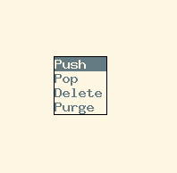
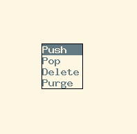

Ratpoison, Clipboard Stack

This is the second post about the Ratpoison window manager.
How many times did you found your self keeping snippets of text in a text editor just so you can use them later because your clipboard will be overwritten with the new selection?
Here is a very neat solution using Ratpoison: a clipboard stack.
Using xclip, a simple shell script and the appropriate Ratpoison key bindings we could accomplish the following:
Note that C-t is the default Ratpoison escape sequence.
With C-t = the clipboard stack is displayed using ratmen, so we can select the snippet we want to be the current one.
With C-t # a ratmen menu is displayed so we can perform operations on the stack such as:
- Push: Push the current selection into the stack
- Pop: Take the latest snippet in the stack as the current selection (so we can paste it with
Ctrl+v as usual)
- Delete: Display the list of snippets in the stack so we can select one to delete it
- Purge: Completely purge the content of the clipboard stack

We get this functionality using the Ratpoison bindings:
bind numbersign exec clipboard_stack.sh menu
bind equal exec clipboard_stack.sh select
This snippet appears in my .ratpoisonrc file that you can read entirely here.
Note that I’ve used key bindings that corresponds to the default ones that tmux uses for the same task.
So now we can push into the stack the selections we know we could use latter and select them from the list when needed.
The script depends on ratmen and xclip
And you can get it from my Dotfiles.
To try it out be sure to define your Ratpoison bindings referencing the right location of the script.
This is the second post about the Ratpoison window manager.
How many times did you found your self keeping snippets of text in a text editor just so you can use them later because your clipboard will be overwritten with the new selection?
Here is a very neat solution using Ratpoison: a clipboard stack.
Using xclip, a simple shell script and the appropriate Ratpoison key bindings we could accomplish the following:
Note that C-t is the default Ratpoison escape sequence.
With C-t = the clipboard stack is displayed using ratmen, so we can select the snippet we want to be the current one.
With C-t # a ratmen menu is displayed so we can perform operations on the stack such as:
- Push: Push the current selection into the stack
- Pop: Take the latest snippet in the stack as the current selection (so we can paste it with
Ctrl+vas usual) - Delete: Display the list of snippets in the stack so we can select one to delete it
- Purge: Completely purge the content of the clipboard stack

We get this functionality using the Ratpoison bindings:
bind numbersign exec clipboard_stack.sh menu
bind equal exec clipboard_stack.sh selectThis snippet appears in my .ratpoisonrc file that you can read entirely here.
Note that I’ve used key bindings that corresponds to the default ones that tmux uses for the same task.
So now we can push into the stack the selections we know we could use latter and select them from the list when needed.
The script depends on ratmen and xclip
And you can get it from my Dotfiles.
To try it out be sure to define your Ratpoison bindings referencing the right location of the script.